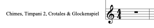

Múltiples Instrumentos
En cualquiera de nuestras partituras podremos exigir que un instrumentista cambie de láminas, por ejemplo de Xilófono a Vibráfono.
Podemos escoger entre dejar el nombre del primer instrumento en la partitura, dejar el listado completo de instrumentos o bien crear un nuevo nombre para su visualización, por ejemplo: láminas.
1. Por defecto aparecerá el primer nombre del instrumento que tocará el intérprete.

2. Podemos mostrar todos los instrumentos que tiene el intérprete en: opciones de maquetación/Pentagramas y sistemas/Mostrar nombre de intérprete en lugar nombre de instrumentos. "no muy práctico"

3. Renombrar el nombre del intérprete.